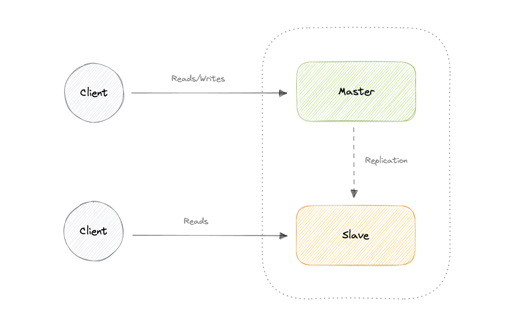
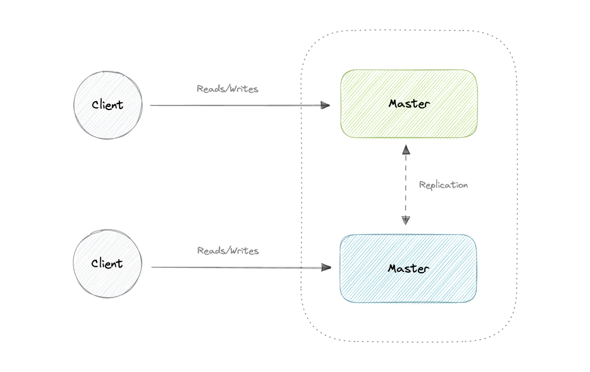
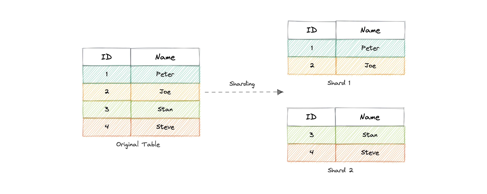
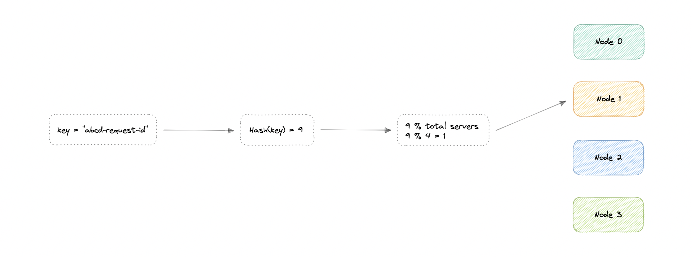
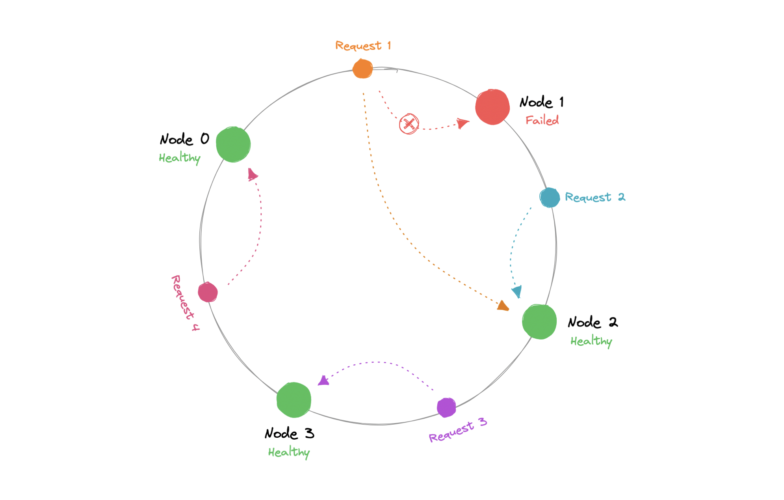
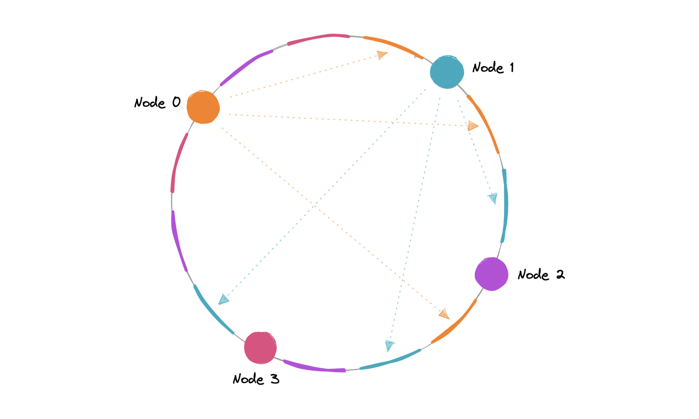
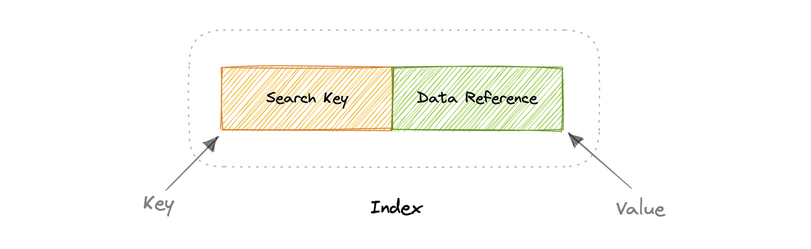
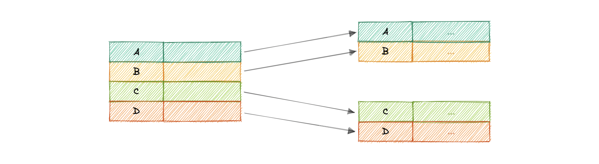
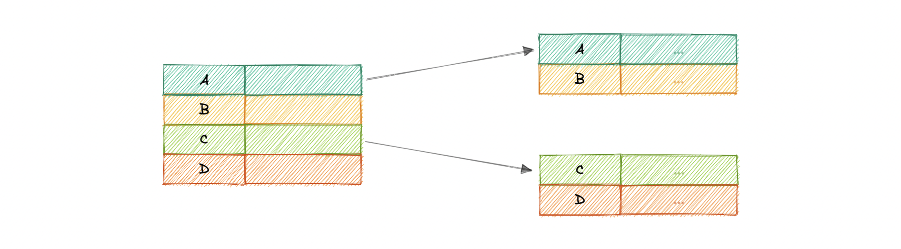
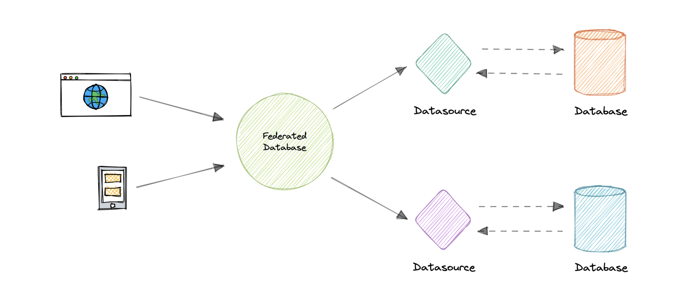

Mở rộng Database
Các kỹ thuật giúp database "chịu tải" ở quy mô lớn: Replication, Sharding, Consistent Hashing, Indexes, Normalization/Denormalization và Federation.
Replication (Nhân bản)
Chia sẻ thông tin để đảm bảo nhất quán giữa các tài nguyên dư thừa → tăng độ tin cậy, chịu lỗi, khả năng truy cập.
| Kiểu | Cách hoạt động |
|---|---|
| Master-Slave | Master nhận read+write, replicate write sang các slave (chỉ read). Master chết → chạy read-only đến khi promote slave. |
| Master-Master | Cả hai master đều read+write, phối hợp với nhau. Một master chết, hệ thống vẫn read+write. |


Sync vs Async: Synchronous ghi vào primary & replica đồng thời (luôn đồng bộ). Asynchronous copy sang replica sau khi ghi primary (rẻ hơn, có thể trễ). Càng nhiều read slave → replication lag càng tăng.
Sharding (Phân mảnh ngang)
Là horizontal partitioning — tách các hàng của một bảng thành nhiều bảng nhỏ gọi là shard; mỗi shard cùng schema nhưng giữ tập con dữ liệu độc lập.

Tiêu chí phân mảnh:
- Hash-Based: dùng hàm băm (nhược: thêm/bớt server tốn kém).
- List-Based: theo danh sách giá trị của một cột.
- Range-Based: theo khoảng giá trị (liền kề, không chồng).
- Composite: kết hợp nhiều kỹ thuật.
Ưu: availability, scalability, security, query performance, data manageability. Nhược: phức tạp, join giữa các shard rất khó & chậm, phải rebalancing khi phân bố lệch.
Consistent Hashing ⭐
Vấn đề với hashing thường (hash(key) mod N): khi thêm/bớt node, N đổi → đa số request bị ánh xạ lại (rất tốn kém).

hash mod N) — thêm/bớt node làm xáo trộn gần như toàn bộConsistent hashing giải quyết: đặt cả node và request lên một vòng tròn băm (hash ring); request đi tới node gần nhất theo chiều kim đồng hồ. Khi thêm/bớt node, chỉ một phần nhỏ (K/N) request phải định tuyến lại.

Phân bố trên ring thực tế thường lệch → có hotspot. Giải pháp: mỗi node vật lý được map nhiều lần lên ring dưới dạng VNode → tải đều hơn, rebalance nhanh hơn, giảm hotspot. Dùng trong: Cassandra, DynamoDB.

Indexes
Index tăng tốc đọc bằng cách như "mục lục" trỏ tới vị trí dữ liệu — đánh đổi: tốn thêm bộ nhớ & ghi chậm hơn (phải cập nhật index).

- Dense index: một bản ghi index cho mọi hàng → tìm nhanh (binary search) nhưng tốn bộ nhớ & bảo trì.
- Sparse index: chỉ cho một số hàng → ít bộ nhớ, ghi nhanh hơn, nhưng tìm chậm hơn.


Normalization & Denormalization
Normalization: tổ chức dữ liệu để loại bỏ dư thừa & phụ thuộc bất nhất, chống các anomaly (insertion/update/deletion).
| Dạng chuẩn | Quy tắc |
|---|---|
| 1NF | Không nhóm lặp; có primary key; không trộn kiểu dữ liệu trong một cột. |
| 2NF | Đạt 1NF + không có partial dependency. |
| 3NF | Đạt 2NF + không có transitive dependency. |
| BCNF (3.5NF) | Mạnh hơn 3NF; với mọi phụ thuộc X→Y, X phải là super key. |
Denormalization: thêm dữ liệu dư thừa để tránh join tốn kém → tăng tốc đọc, đánh đổi tốc độ ghi. Đặc biệt hữu ích khi dữ liệu đã phân tán (sharding/federation) khiến join qua mạng phức tạp.
Normalize: ít dư thừa, nhất quán cao, nhưng nhiều join → chậm. Denormalize: đọc nhanh, ít join, nhưng dư thừa & dễ bất nhất, ghi đắt. Hệ thống đọc-nhiều thường nghiêng về denormalize.
Federation
Federation (functional partitioning): tách database theo chức năng, làm nhiều DB vật lý trông như một DB logic. Đặc trưng: transparency, heterogeneity, extensibility, autonomy, data integration. Nhược: thêm phần cứng & phức tạp, join giữa các DB khó, phụ thuộc nguồn dữ liệu tự trị.

Replication (master-slave/master-master, sync/async) tăng tin cậy. Sharding chia hàng thành shard (chú ý join & rebalance). Consistent hashing + VNodes giảm xáo trộn khi thêm/bớt node. Index tăng đọc/chậm ghi. Normalize giảm dư thừa, denormalize tăng đọc. Federation tách DB theo chức năng.